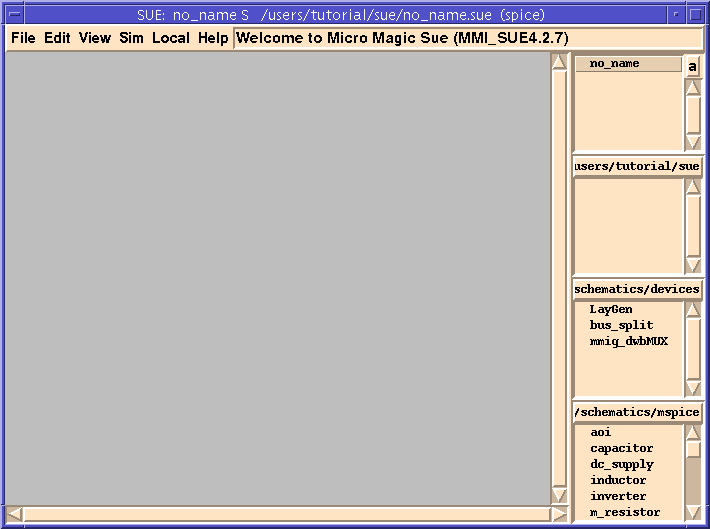
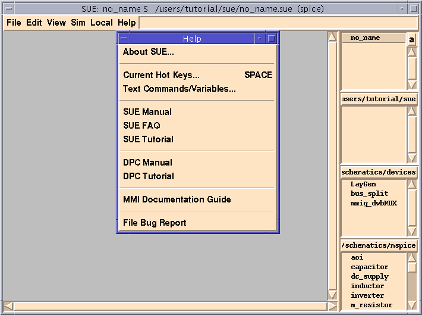

SUE Design Manager Tutorial |
Part 1
Getting Started With SUE Design Manager
Introduction
- Welcome to SUE Design Manager, from Micro Magic Tools. SUE is more than just a schematic capture program. It is a complete graphical user environment.
SUE Features
- With SUE, you will be able to:
- Draw, view, and edit schematics, icons, random graphics and text.
- Use the built-in netlister to Verilog, HSPICE, Berkeley SPICE, and IRSIM.
- Cross-probe directly with Verilog, IRSIM, HSPICE, and MAX (the Custom Layout Editor from Micro Magic Tools).
- Interactively run Verilog and IRSIM, with logic values displayed directly on the schematic.
- Automatically attach documentation, Verilog models, etc. to schematics.
- Automatic version control.
- This tutorial will carefully walk you through these features and many more.
Getting Started
- Before we get started make sure someone has already installed SUE at your site.
Starting Up SUE
- To run the tutorials, you need to make a personal copy of the SUE tutorial directory.
- at the UNIX prompt. Make sure that the appropriate tutorial is selected and then click on
Install Tutorial. The default installation directory is "mmi_private/tutorial" in your home directory. You can also select a different directory for installation. Don't worry if the directory doesn't exist, the script will make it if it can. You can also use this to reinstall a clean copy of the tutorial.
- To start the tutorial, you must first "
cd" (change directory) to the directory that you installed the tutorial into. If you used the default directory, type:cd ~/mmi_private/tutorial/sue
- Otherwise, replace the above directory with the directory you selected. This directory contains files that you will need to run the tutorial.
- A window should come up that looks something like this:
Figure 1: SUE Window

SUE Screen Layout
- On the very top of the window the title bar should say:
SUE: no_name S <path_to_cell> (spice)
- "
no_name" means that you have not specified the file (schematic) you wish to edit. The "S" means that you are editing aschematic, as opposed to an icon. The "(spice)" means that you are currently inSPICE simulation mode.
- Below the title bar you should see the menu bar which contains the following menu items:
File,Edit,View,Sim,LocalandHelp. These are pull down menus much like any window-based application using click and drag.
- Directly to the right of the
Helpmenu is theSUE Message Area. It currently says“Welcome to Micro Magic SUE (MMI_SUE4.3.3).”Note that the 4.3.3 (or whatever the number is) refers to the version of SUE you are running. If you want to see more information about the version, go toAbout SUEin theHelpmenu.
Library List Boxes
- Down the right side of the window are several small Library List Boxes.
- The top one is the
Schematic Listbox. This lists all current schematics that have been loaded into SUE. Currently only "no_name"should be listed.
- All of the rest of the
List Boxesare for icons. (In some tools, Icons are called Symbols -- they are the same thing). EachIcon List Boxdisplays the loaded icons in a given library, which is also a UNIX directory.
- The UNIX directory of the Library in each
Icon ListBox is shown at the top of the List Box, clipped from the left. You can change what Library goes in which List Box by holding down Button-1 on this directory name and selecting a different library from the list. Libraries are automatically added to this list when you load any element from them. You can also load all of the icons in the Library by selectingAutoload directory,and add or subtract List Boxes with this menu.
- The top
Icon Listbox typically contains the library that you are working in. When you create new icons, they will show up there. The other List boxes contain other libraries. In this example, themspiceanddeviceslibraries are shown. Thedevices Libraryis necessary since it contains the all-important I/O icons: input, output, inout, and global. It also contains other handy general-purpose icons. Themspice Libraryis useful for low level circuit design since it contains parameterized transistors, simple gates, and the like.
SUE Pull Down Menus and Hotkeys
- SUE pull down menus work just as in most other window-based applications. Each command is listed with its hotkey shortcut next to it (if it has one). In addition, when you drag the cursor over an entry, a description of the command is displayed in the
SUE Message Area.
- SUE menus can also be torn off -- that is, turned into top level windows that don't roll back up when you're done with them. This can be useful if you need to go to them frequently and they don't have a hotkey (or you can't remember it).
- To tear off a menu, simple click on the "--------" (dotted line) at the top of the exposed menu. Try tearing off the
Helpmenu now.
- You should now see something like Figure†-2. You can manipulate this window like any other Xwindow (window manager dependent). For example, you can move it by clicking and holding down the left mouse button (Button-1) over the top title bar and dragging it around. Or you can close the window by holding down the right mouse button (Button-3) over the top title bar and selecting
Closefrom the menu that pops up.
Figure 2: Help Menu

- Scroll bars are shown across the bottom and right side of SUE (and are found in the List boxes). These work like the scroll bars in most other applications.
- To view the complete SUE on-line manual, select
SUE Manualfrom theHelpmenu. In addition to providing detailed information on all of SUE's commands, modes, and features, the SUE manual explains the philosophy behind SUE. After finishing this tutorial you should read through the manual. In fact, it would be very useful to read the sections on SUE Philosophy and Selection at this time.
- Now hit the Space key (or
Current Hot Keysin theHelpmenu). You will now see all of the hot keys in alphabetical order, plus a description of what they do. This window is context specific, so when you are in a mode likeAdd Wireand hit the Space key, you will see just those hotkeys which are active in that mode. Hit Space again to close the hotkey window.
| ----- Micro Magic ----- |